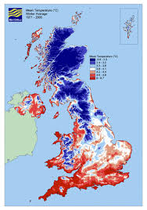
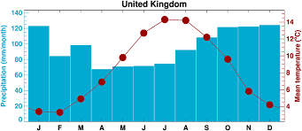
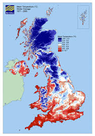
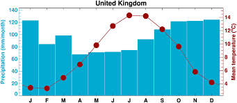

The UK has four distinct seasons. Characterized by mild winters (2-7°C), cool summers (18-22°C), and frequent, often unpredictable, rain year-round. This is due to the Atlantic oceans influence.
Winter (Dec-Feb): Cool, damp (2-7°C), with occasional snow in north/ Scotland.
Spring (Mar-May): Mild, often windy with showers (7-16°C).
Summer (Jun-Aug): Warm but can be unsettled (18-22°C), with longer days.
Autumn (Sep-Nov): Clear days, cool evenings (7-14°C).